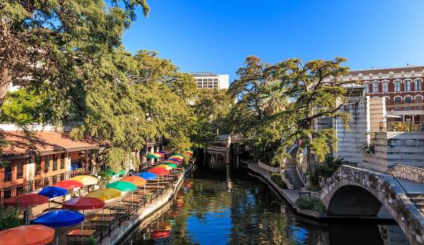

About Me
My name is Joshua Wright. I am a student at BYU studying Web Development. I was born in Arlington, Texas. Which is just outside of Dallas. I currently live in beautiful San Antonio, Texas with my wife and five children. We are a very busy bunch. I recently owned a custom cabinet business and dedcided to make a career change into the software side of IT. I love the outdoors, woodworking (anything with my hands) and staying busy.
San Antonio, Texas
San Antonio is the 3rd largest city in Texas. Known for it's history, "Remember The Alamo" The Alamo is a staple of San Antonio "AKA" Alamo City. San Antonio is also known for it's love for the military. With several military bases supporting the Air Force, Army and other branches it has gained the name of Military City USA. One other thing San Antonio is knowm for is the beautiful Downtown Riverwalk. The Guadalupe River runs right through the heart of the city that is dyed green for Saint Patrick's Day and lit up with lights during Christmas time. 